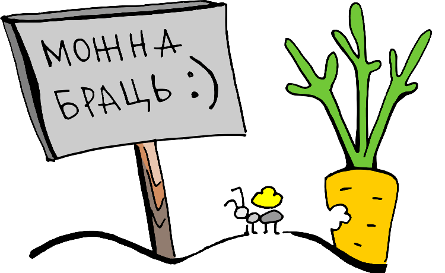
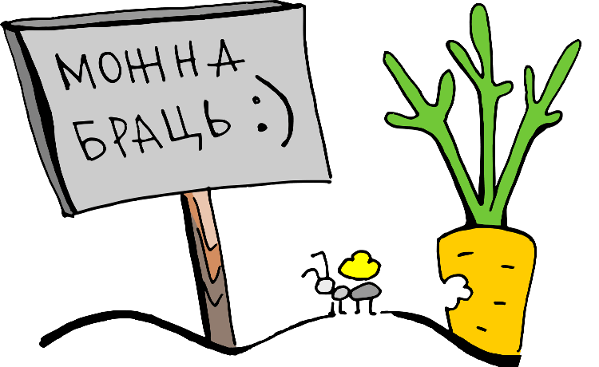

Што такое Creative Commons?
“А вось і паспрабую”, – аднойчы дзёрзка адказаў капірайту прафесар права Лорэнс Лессіг. І ў 2001 годзе ён даў дарогу Creative Commons (CC) - некамерцыйнай арганізацыі, што стварыла бясплатныя для выкарыстання публічныя ліцэнзіі. З дапамогай гэтых ліцэнзій аўтары могуць даступна і зразумела выказваць сваю волю адносна твораў і распаўсюджваць іх шырэй і вальней.


 
